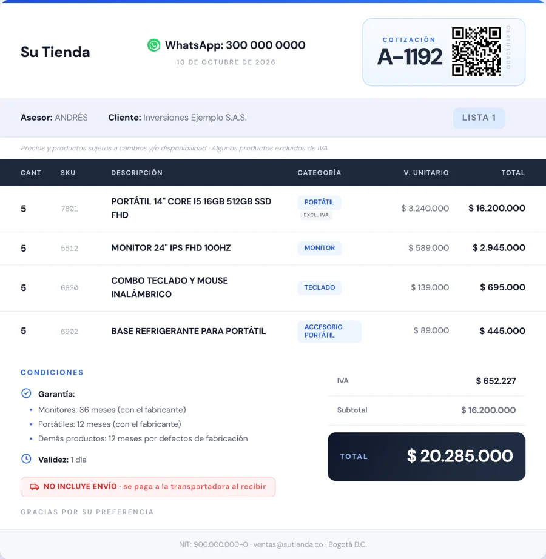
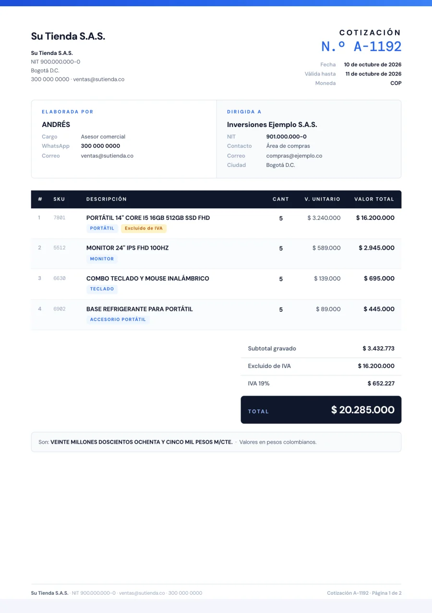

La lista de precios cambió otra vez.
Su proveedor mueve los precios cada semana y nadie alcanza a revisar la lista entera a tiempo. ProjectCode la convierte en catálogo, le dice exactamente qué cambió y deja a su equipo cotizando en segundos.
media hora / sin instalar nada / con su propia lista
- Disco SSD NVMe 1 TBSKU 2210$ 259.000+
- Memoria DDR5 32 GB (2 × 16)SKU 3318$ 449.000+
- Tarjeta de video 12 GBSKU 1042$ 2.349.000+
lo que entra, lo que sale
- PDFLista del proveedor
- XLSExcel
- WEBPortal del proveedor
- IMGFoto del cliente
- WACotización para WhatsApp
- A4Hoja A4 con NIT
- 3×Aviso a las otras sedes
- $Cierre de caja
Hay tres días entre el proveedor y el mostrador.
La lista llega con el formato que al proveedor se le ocurrió esta vez, y mientras no esté en la pantalla del mostrador se sigue cotizando con la de antes. Cuando el precio subió, la tienda pierde el margen; cuando bajó, pierde una venta que pudo cerrar.
Cambios de la lista
de 512 a 524 productos- subieron
- 18
- bajaron
- 12
- nuevos
- 14
- agotados
- 2
- Tarjeta de video 12 GBSKU 1042
$ 2.150.000$ 2.349.000▲ $ 199.000 · 9 % - Disco SSD NVMe 1 TBSKU 2210
$ 289.000$ 259.000▼ $ 30.000 · 10 % - Memoria DDR5 32 GB (2 × 16)SKU 3318
$ 415.000$ 449.000▲ $ 34.000 · 8 %
Si hoy alguien cotiza la tarjeta de video con la lista de la semana pasada, cada una sale $ 199.000 más barata de lo que debería, y eso sale del margen. En el SSD pasa al revés: cotizado $ 30.000 más caro, la venta se va para la competencia.
Casi todo el trabajo es pasar datos.
Abrir el PDF, buscar la referencia, copiarla al Excel, comparar con la lista de la semana pasada, avisarle al equipo. Nadie lo decide: es pegamento. ProjectCode hace el pegamento y le deja a usted las decisiones.
- Leer el PDF524 líneas2,4 s
- Armar el catálogocon categorías0,8 s
- Comparar con la lista anterior512 → 5240,3 s
- Marcar lo que cambió18 ▲ · 12 ▼0,1 s
- Avisar al equipo3 sedesal instante
Mientras alguien pasa la lista, el mostrador sigue cotizando con los precios viejos.
La lista entra, se compara sola y el equipo la ve al abrir la aplicación.
Y en el resto del día, lo mismo.
-
encontrar un precio
Abrir el PDF y buscar con Ctrl + F, página por páginaEscribir el nombre o el SKU -
saber qué cambió
Poner dos PDF lado a lado y comparar a ojoLa lista de cambios ya viene hecha -
mandar la cotización
Pasarla a mano a un Excel o a un mensajeCopiar imagen y pegarla en WhatsApp -
avisar a la otra sede
Llamar y esperar a que alguien contesteEl aviso le llega solo
Tiempos de ejemplo con una lista de 524 referencias.
Su PDF no se va a ninguna parte.
En este negocio casi todo se mueve en PDF, y va a seguir así mientras el proveedor lo mande así. ProjectCode no le pide cambiar eso. Recibe la lista igual que siempre y le pone encima lo que un archivo nunca va a poder darle.
- Su proveedor le manda la lista como se la manda hoy.
- Usted sigue mandando la cotización por WhatsApp.
- El cliente recibe su documento, con su marca.
- Su forma de calcular precios y descuentos no cambia.
- La lista entra sola y le dice qué subió y qué bajó.
- Se busca en todo el catálogo en segundos.
- Cada cotización queda guardada, con su seguimiento.
- Un tablero de administración en vez de una carpeta de archivos.
Una aplicación abierta todo el día en el mostrador.
Cinco cosas que hoy viven repartidas en archivos, chats y memoria.
El mismo PDF de siempre, convertido en catálogo.
El sistema lee el archivo que le llegó —PDF, Excel o lo que sea—, arma el catálogo y lo compara contra el anterior. En vez de un archivo nuevo del que nadie se entera, el equipo recibe qué subió, qué bajó, qué entró y qué se agotó, con el precio viejo al lado del nuevo.
- El equipo ve el cambio al abrir, no cuando el cliente reclama.
Buscar en todo el catálogo y armar la cotización en segundos.
Búsqueda por nombre o SKU, filtro por categoría y más de una lista de precios activa al tiempo. El vendedor añade con un clic y el total se recalcula mientras habla con el cliente.
- Lo que se buscó y no existía queda registrado como demanda.
“PC gamer de 10 millones.” Con eso basta.
El asesor pega el mensaje tal como lo mandó el cliente. El asistente recorre el catálogo de la tienda, arma el equipo completo —procesador, board, memoria, disco, tarjeta de video, fuente, caja y disipador—, revisa que las piezas sean compatibles entre sí y lo ajusta al presupuesto.
- Cada pieza trae su porqué, escrito para que el cliente lo entienda.
- Los precios salen de su lista, no de la IA: lo que no está en el catálogo no entra.
La foto que manda el cliente se vuelve cotización.
El cliente manda la captura de una lista de la competencia o el papelito de lo que quiere. El asistente lo traduce a productos del catálogo propio: cuáles son exactos, cuáles son equivalentes y por qué, y cuáles no existen en la lista activa.
Ninguna cotización se queda esperando sola.
Cada cotización guarda estado, teléfono y notas. Las que llevan días sin respuesta se marcan solas, y el vendedor abre el día sabiendo a quién llamar en vez de revisar el historial de WhatsApp.
- El administrador ve las de todo el equipo.
Vendió en una sede. El cliente recoge en otra.
Es la venta que más se cae y la que peor se maneja: una llamada, un mensaje suelto, un papel en el mostrador. Cuando el cliente llega a la otra sede, nadie sabía que venía. Aquí se registra en el momento y la sede que recibe se entera al instante, sin que nadie tenga que llamar.
- Pendiente
- Preparado
- Entregado
La otra sede se entera sola
Banner, sonido y un contador en la pestaña. Si el asesor tiene los avisos del navegador activados, le llega aunque esté en otra ventana. Nadie tiene que levantar el teléfono para avisar que va un cliente en camino.
Y queda el registro
Quién la registró, quién la alistó, quién la entregó y a qué hora. Cuando algo no aparece, la conversación deja de ser quién tuvo la culpa y pasa a ser dónde se quedó.
Un martes, visto desde ProjectCode.
Cada venta queda registrada con su número de factura y su forma de pago, y cada cierre con el nombre de quien lo hizo, sin pasar nada a un Excel. El día termina con lo que debe haber en la caja; el mes, con el total, el promedio y el detalle de cada jornada.
de diferencia entre lo vendido y lo contado en caja. Cuadrada.
cotizaciones sin respuesta hace más de dos días
Total, promedio por día, mejor día y facturas, armado solo desde los cierres diarios.
Cifras de ejemplo.
El mes sale solo de los cierres diarios: total, promedio por día, mejor día y facturas.
Cada día cerrado queda guardado y se encuentra por fecha, asesor, número de factura o remisión.
Cada venta con su forma de pago, y el total a entregar en caja calculado solo.
Cotizaciones por asesor —a quién reconocer y a quién darle una mano—, productos más cotizados y búsquedas sin resultados: demanda que se está yendo por la puerta.
El que entra nuevo rinde el primer día
Hoy un asesor nuevo se demora semanas aprendiéndose el catálogo y a quién preguntarle por un precio. Con el catálogo buscable y los precios al día, cotiza bien desde el primer turno.
Nadie se vuelve indispensable
Cuando el que sabe sale a vacaciones, hoy se lleva las cotizaciones y los seguimientos en su WhatsApp. Acá se quedan en la tienda: quien lo reemplace abre el historial y sigue donde el otro dejó.
Nada de esto aparece en el estado de resultados. Aparece en cuántas cotizaciones alcanza a sacar la misma persona en el mismo día, y en cuántos puntos puede abrir antes de tener que crecer el equipo.
Un cero de menos le puede costar el margen del mes.
Esa lista la digita o la interpreta alguien, y alguien se equivoca. Labs es la consola del administrador: cuántas unidades quedan de cada referencia, en qué sede están, cuánto margen deja cada venta — y qué hay que revisar antes de que un precio malo salga al mostrador.
- Separa las referencias que entraron incompletas —sin precio o sin categoría— antes de que lleguen al catálogo. Una sin precio no se puede cotizar; una sin categoría no aparece cuando la buscan.
- Detecta las líneas que salieron revueltas al leer el archivo, cuando el texto de un producto se pega al del que tiene al lado y termina con el precio equivocado.
- Si más del 15 % de la lista llega con problemas, el aviso no le sale solo al administrador: lo ve todo el que abra la aplicación, antes de cotizar.
- Un precio que cae de un millón a cien mil no es una oferta, es un cero de menos. Se detiene y pide confirmación.
- Venta por debajo del costo: si la lista nueva subió y el precio de venta quedó abajo, no pasa callado.
- Cotizar algo agotado: avisa en el momento, no cuando el cliente ya dijo que sí.
Cuando el cliente es un área de compras, el papel importa.
El mismo carrito sale en dos formatos. Para WhatsApp, un documento corto. Para una licitación o una orden de compra, una hoja A4 con emisor y destinatario con NIT, líneas numeradas, IVA desglosado, total en letras y numeración de páginas.
- 01Emisor y destinatario con NIT
- 02Líneas numeradas
- 03IVA desglosado
- 04Total en letras
- 05Numeración de páginas
Los datos del emisor y las condiciones comerciales se configuran una vez. Documentos generados por la aplicación con datos de ejemplo.


Seis meses en un mostrador de verdad.
ProjectCode nació dentro de una tienda de tecnología en Bogotá con tres puntos de venta, y ahí estuvo seis meses con varios asesores cotizando sobre él todos los días. Cada función existe porque alguien la necesitó en una venta, no porque se veía bien en una demo.
Con su lista, su marca y su NIT.
El formato en que le llegan los precios
PDF, Excel o el portal del proveedor. Se conecta una vez, al principio, y de ahí en adelante la lista entra sola.
Nombre, logo y datos de la empresa
Las cotizaciones salen a nombre de su tienda. ProjectCode no aparece por ningún lado.
Una cuenta y un consecutivo por asesor
Usted decide quién ve el catálogo completo, quién factura y quién administra.
Y si su negocio funciona distinto —otro consecutivo, otras formas de pago, otro software de facturación— el sistema se cambia. Quien lo escribió es quien hace el cambio, y el alcance se acuerda con usted antes de empezar.
Sus datos son suyos.
El catálogo, las cotizaciones y los clientes que su tienda carga en ProjectCode son de su empresa. Esto es exactamente qué se guarda, dónde vive, quién lo ve y qué recibe la inteligencia artificial. El detalle completo está en los documentos de abajo.
Qué se guarda
Cada cotización con el nombre del cliente, su teléfono, las notas de seguimiento y los productos. En modo Empresas, además la razón social y el NIT del comprador. Su catálogo de precios. Y una cuenta por asesor con su correo, su sede y su consecutivo.
Dónde vive y quién lo ve
En Google Firebase, sobre infraestructura de Google Cloud. Los asesores aprobados de su tienda pueden consultar las cotizaciones del equipo, para retomar la de un compañero; solo quien la creó puede editarla o borrarla. El soporte de ProjectCode tiene acceso de lectura para atender fallas. El navegador guarda además una copia de las últimas ochenta, para cotizar sin conexión.
Qué recibe la inteligencia artificial
Lo que el asesor le manda a cada función: la imagen de una lista, la pregunta de un cliente, el pedido para armar un PC o el contexto que escriba, junto con el catálogo. Nunca la base de clientes. Si el asesor escribe datos de un cliente en esos campos, esos datos sí viajan al proveedor.
Cifrado en el navegador: ni ProjectCode ni Google pueden leer lo guardado.
Los datos de sus clientes se cifran en el computador del asesor antes de salir hacia la base de datos, con una llave que el sistema genera para su empresa. La activa el administrador de su tienda, se muestra una sola vez y queda solo en los equipos donde se ingresa. A la base llega texto ilegible.
se cifra
- Nombre, teléfono y notas de seguimiento de cada cliente.
- En cotizaciones a empresas: razón social, NIT, contacto, correo y ciudad.
- En las recogidas entre sedes: cliente, teléfono, productos, notas y la foto.
queda legible, y por qué
- Productos, totales, estado y fechas de las cotizaciones: con eso se calculan el cierre de caja y las métricas.
- El correo del asesor: con eso se sabe quién hizo cada cotización.
- El catálogo de precios: no tiene datos de personas.
Viene apagado: no se cifra nada hasta que el administrador lo activa, y lo que ya estaba guardado se cifra a medida que cada asesor entra con la llave. Si su empresa pierde la llave y la copia que guardó, nadie puede recuperar esos datos, tampoco nosotros: esa es la garantía. El cifrado protege lo que queda en la base de datos; un computador con la sesión abierta sigue dependiendo de la seguridad de su tienda.
Términos de uso
1. Qué se contrata
ProjectCode le concede a su empresa una licencia de uso del sistema por el término acordado. No es una venta: el código fuente, la arquitectura y la documentación siguen siendo propiedad de ProjectCode. La licencia es para su empresa, no es transferible ni sublicenciable a terceros.
2. Qué es de cada uno
De ProjectCode: el software y todo lo que lo compone. De su empresa: su marca, su logo, su lista de precios, sus cotizaciones y los datos de sus clientes. Al terminar la relación, su empresa puede llevarse esa información en formato legible.
3. Disponibilidad
El sistema se apoya en servicios de terceros —Google Firebase para la base de datos y la autenticación, y proveedores de inteligencia artificial para el asistente—. Una caída de esos servicios afecta al sistema y está fuera del control de ProjectCode. Las funciones de catálogo y cotización siguen operando localmente cuando no hay conexión.
4. El asistente sugiere, no decide
Lo que devuelven el escaneo de imágenes y el armado de equipos son sugerencias generadas automáticamente y pueden contener errores. La revisión final, antes de que la cotización salga al cliente, es del asesor. ProjectCode no responde por el contenido de lo que se envía.
5. El catálogo es de su empresa
El catálogo lo publica su empresa a partir de la lista de su proveedor. ProjectCode no verifica ni garantiza esos precios, y no responde por errores que vengan de la lista de origen ni por diferencias con el precio final de venta.
6. Límite de responsabilidad
La responsabilidad de ProjectCode se limita al valor pagado por la licencia en los doce meses anteriores al hecho. No cubre lucro cesante, pérdida de oportunidades comerciales ni daños indirectos.
7. Ley aplicable
Este acuerdo se rige por las leyes de la República de Colombia. Las diferencias se resuelven ante los jueces de Bogotá D.C.
Tratamiento de datos personales
1. Quién responde por los datos
Frente a la Ley 1581 de 2012 y al Decreto 1074 de 2015, su empresa es el Responsable del Tratamiento de los datos de sus clientes y de sus asesores. ProjectCode actúa como Encargado: trata esos datos únicamente para prestarle el servicio, siguiendo sus instrucciones, y no los usa para fines propios ni los cede a terceros distintos de los que aparecen abajo.
2. Qué datos se tratan
De sus clientes: nombre, teléfono, notas de seguimiento comercial y, cuando se cotiza a una empresa, razón social, NIT, contacto, correo y ciudad. De sus asesores: correo de la cuenta de Google con la que entran, nombre visible, sede asignada y registro de ingresos al sistema con fecha y navegador.
3. Para qué
Para generar y guardar cotizaciones, hacerles seguimiento comercial, cuadrar la caja del día, medir la actividad del equipo de ventas y controlar quién tiene acceso al sistema.
4. Quién más los ve
Google (Firebase Authentication y Cloud Firestore) aloja la información. Los proveedores de inteligencia artificial reciben solo lo que el asesor envía a cada función: Google Gemini, la imagen que se escanea y la pregunta del cliente con el contexto que se agregue; Groq (Estados Unidos), los productos, los precios y el contexto que el asesor escriba en “Generar texto”, que puede incluir datos personales; DeepSeek (República Popular China), el pedido que el asesor escribe en “Armar PC” junto con el catálogo. Ninguno recibe la base de clientes.
5. Derechos del titular
Toda persona cuyos datos estén en el sistema puede conocerlos, actualizarlos, rectificarlos, solicitar prueba de la autorización, ser informada del uso que se les da, presentar quejas ante la Superintendencia de Industria y Comercio, y revocar la autorización o pedir la supresión cuando proceda. Las solicitudes se atienden por el WhatsApp de contacto de esta página.
6. Seguridad
El ingreso es con cuenta de Google sobre una lista de correos autorizados por el administrador de su tienda. Cada cuenta admite una sola sesión activa a la vez. Solo quien creó una cotización puede editarla o borrarla; la consulta está abierta a los usuarios aprobados de su tienda. Cuando el administrador de su tienda activa el cifrado, los datos personales de los clientes se guardan cifrados con una llave de su empresa.
7. Lo que le corresponde a su empresa
Obtener de sus clientes la autorización para tratar sus datos, publicar su propio aviso de privacidad y —si le aplica por tamaño— registrar sus bases de datos ante la Superintendencia de Industria y Comercio. Son gestiones que hace su empresa directamente, porque es la titular de la relación con esos clientes; ProjectCode no puede hacerlas en su nombre.
Traiga su lista de precios a la demo.
La forma más rápida de saber si le sirve es verlo con su propio catálogo. Media hora, sin instalar nada, y sale sabiendo exactamente qué haría el sistema con los precios que maneja hoy.